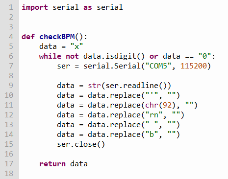
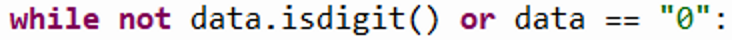
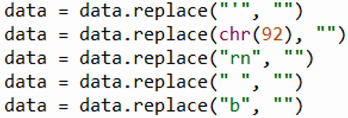

Progress Log:
Weeks 1-5:
Brainstormed Project Ideas and researched viability of each.
Week 5-7:
Planned rough outline of how system will work.
Created rough draft of programme in python.
Used random values as a "test heart-rate" instead of pulse sensor values.
Created programmatically edited CSV file.
Week 7-9:
Created basic MicroBit programme to collect data from pulse sensor.
Created basic python function to collect serial data from MicroBit.
Tested pulse sensor on MicroBit's serial plotter to ensure its functional.
Week 9-11:
Brainstormed ways of detecting heart beat using pulse-sensor data.
Created heart beat detection using MicroBit.
Tested serial USB communication through MicroBit.
Week 11-13:
Created python function to recieve, verify and clean data recieved using serial communication.
Programmed 'what if' type questions, using the custom CSV database.
Week 13-15
Fixed errors relating to CSV storing. - It accepted NaN values.
Tested if the programme would accept, unusual values (tested validation code).
Created graphing function within the python programme using matplotlib.
Week 16:
Created video for "Meeting The Brief".
A Problem I Encountered:
The most difficult problem I encountered during implementation was programming the MicroBit to recognize a heartbeat.
My only means of measuring the user's heart rate was by using the pulse sensor to count the amount of beats per minute.
Originally I planned to recognize a heartbeat by setting a threshold at which if the pulse sensor's output passes,
the MicroBit would recognize it as a beat. The pulse sensor gave an analogue output within a range of 0 - 1023, however,
the average output value deviated often. This is due to multiple factors, however the primary
cause I had observed was that since the pulse sensor operates by measuring the amount of light not absorbed by the user's
haemoglobin, if there was any significant movement by the user the pulse sensor would move with them potentially
shining the light on a larger/smaller blood vessel containing more/less haemoglobin resulting in a larger or smaller
output range from the pulse sensor. This meant that the original method that I used to ensure the MicroBit recognized a
heartbeat would not work.
This was the solution I came to; Every second,
the pulse sensor sent roughly 50 outputs, so I attempted to utilized fast frequency in my solution. Each time the MicroBit
read a value given by the pulse sensor, it would add said value to the end of a list called "pulse_list". Then, every 2
seconds, the MicroBit would loop through "pulse_list" and add each index in pulse list to a variable called "Average". Then
once all values in "pulse_list" were added to "Average", I divided "Average" by the length of "pulse_list". I then emptied
"pulse_list" and for the next 2 seconds, if the pulse sensor output went from being less than "Average" to greater than "Average",
the MicroBit would recognize it as a heartbeat. After 2 more seconds the same process would occur, ensuring that even if the
pulse sensor's output range changed drastically, within 2 seconds the MicroBit would be able to recognize the user's heartbeat.
The below is the code and an image of the serial plotter to better understand the solution:
An Important Piece of my Code:

This piece of code was vitally important to the functioning of my project. The purpose of this function was to clean and
validate any serial data received by the python programme. The entire project hinged on receiving value for heart rate
from the MicroBit. This code ensured this by first initializing the data variable as a alphabetical string.
This was to ensure that the programme entered the while loop when the function "checkBPM()" was called,
as "str.isdigit()" returns False if the string is not only numerical digits.

The loop then initializes the serial connection, then reads the received serial data. The serial data is
received in a unpleasant format with many unwanted characters littered throughout.
The function "str.replace()" resolves that issue by replacing any character with another.

The loop then closes the serial connection. Finally, if the string "data" is not solely
numerical digits or is equal to "0" (to ensure NaN values are not accepted), the function returns the
variable "data" to the main programme to be used as heart rate.